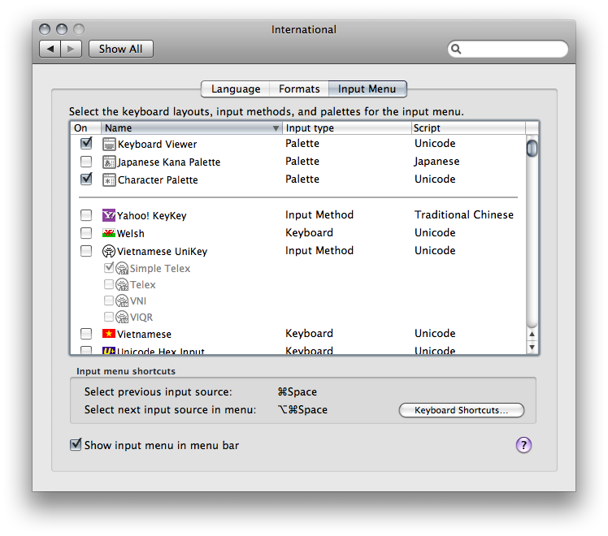

Thank you for choosing Yahoo! KeyKey.
You need to logout to complete the installation. We can't help, it's Mac OS X that requires us to do so.
After re-login, please launch System Preferences and click on the International settings.
Then, once you see the International settings panel (it'll be something like the picture below), click on the Input Menu tab. Find “Yahoo! KeyKey” and check its checkbox to activate the input method.
After that you'll find Yahoo! KeyKey in the input menu on the right side of the menu bar. And that's it. Enjoy using Yahoo! KeyKey input method.